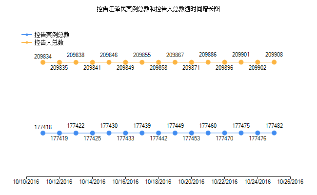
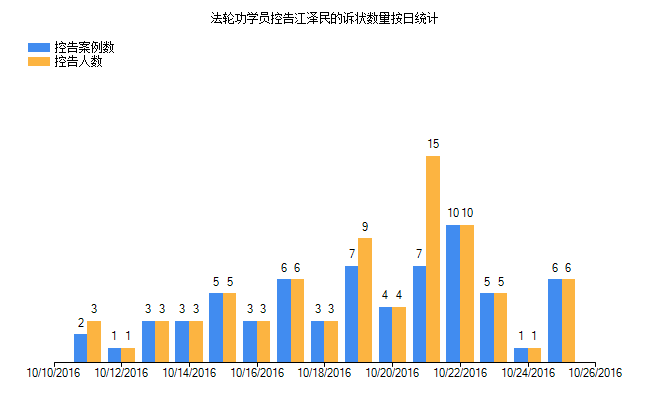

诉江简介
一九九九年七月二十日，前中共头目江泽民悍然发动了对法轮功的迫害，这场反人类的暴行一直延续到今年，已经持续了十六年。
江泽民发动和维持的这场群体灭绝性的迫害，给上亿法轮功修炼者和他们的家人带来巨大的苦难。同时，这场对无辜好人的迫害也使中国的法制越发黑暗，使中共的官吏越发贪残，也使中国社会的道德越发沦丧。所有的中国人都是这场迫害的受害者。
二零一五年五月以来，中国大陆法轮功学员发起了控告江泽民的大潮，目前已有数万法轮功修炼者和家人把控告元凶江泽民的刑事控告状邮寄给中国最高检察院，要求最高检察院向最高法院对江泽民提出公诉，把这个首恶绳之以法。
最新统计
从2015年5月底到2016年10月25日，明慧网已收到总数209908名（177482案例）法轮功学员及家属递交给中国最高检察院、法院的实名诉讼状副本。2016年10月25日一天，超过6人（6案例）递交诉状控告江泽民。由于网络封锁和信息传输的不便，实际数字不止于此。
 诉江案牵扯至少3868起人命案
控告人中，有一部分是至亲被迫害致死，有的甚至是多位亲人被迫害致死，十六年来他们承受的巨大痛苦鲜为人知……
被告涉嫌犯罪一览
1、违犯国际法和中国加入的国际条约的规定，已构成公认的国际犯罪。
被控告人为了达到其妄图根除法轮功的目的，对作为信仰群体的法轮功学员实施“肉体上消灭”、“打死白打死，打死算自杀”、“不查身源，直接火化” 的国家恐怖主义灭绝政策，已经构成了群体灭绝罪。中国已经加入联合国的《防止及惩治灭绝种族罪公约》和《禁止酷刑公约》。据此，江泽民作为中共迫害元凶违 反国际法，已构成危害人类罪、酷刑罪等公认的国际犯罪。
2、违反《宪法》：
违反《宪法》第三十六条侵犯公民信仰自由权；违反第三十五条侵犯公民言论自由权；违反第三十七条侵犯公民的人身自由权；违反第三十八条侵犯公 民的人格尊严，对公民进行侮辱、诽谤和诬告陷害；违反第三十九条，公民住宅不受侵犯，非法侵入公民住宅、非法搜查公民住宅。
3、触犯《刑法》：
第二百三十二条：故意杀人罪
第二百三十四条：故意伤害罪
组织他人出卖人体器官的属于故意伤害罪；
未经本人同意摘取其器官，或者摘取不满十八周岁的人的器官，或者强迫、欺骗他人捐献器官的，依照故意伤害罪、故意杀人罪规定定罪处罚。
违背本人生前意愿摘取其尸体器官，或者本人生前未表示同意，违反国家规定，违背其近亲属意愿摘取其尸体器官的，依照第三百零二条：盗窃侮辱尸体罪的规定定罪处罚。
第二百三十六条：强奸罪
第二百三十七条：强制猥亵、侮辱妇女罪、猥亵儿童罪
第二百三十八条：非法拘禁罪
第二百三十九条：绑架罪
第二百四十五条：非法搜查罪、非法侵入住宅罪
第二百四十六条：侮辱罪、诽谤罪
第二百四十七条：刑讯逼供罪、暴力取证罪
第二百四十八条：虐待被监管人罪
第二百五十一条：非法剥夺公民宗教信仰自由罪、侵犯少数民族风俗习惯罪
第二百五十四条：报复陷害罪
第三百九十七条：滥用职权罪
第三百九十九条：徇私枉法罪
4、违反《刑诉法》：
违反《刑诉法》第十一条、第十四条、第五十六条、第五十七条、第五十八条、第五十九条、第一百八十三条的相关规定。
各界声援
加拿大政治家：诉江之势 势不可挡
曾历任省议员和多届市议员的加拿大政治家、律师约翰‧帕克先生表示，法轮功学员无惧迫害和压力状告江泽民，勇气可嘉，全世界人都应该敬仰他们。他说：诉江之势，势不可挡，必将为中国社会带来变革。
加国会议员：诉江民众勇气可嘉（图）
现在已有逾六万人递交诉状，控告江泽民对法轮功的迫害罪行。近日，加拿大国会议员接受采访时称赞，中国民众挺身而出状告江泽民，勇气可嘉。
澳洲参议员关注诉江大潮
澳洲联合新闻社七月七日对现居布里斯本的法轮功学员加入诉江大潮的报导被澳洲主流媒体迅速转载，引起强烈反响。澳洲联邦参议员乔•布洛克七月九日接受采访时表达了他对此事的关注。
大陆各界声援法轮功学员控告江泽民
大陆各界人士声援法轮功学员起诉江泽民，其中包括教授、律师、学者、前中共官员及普通公民。
大陆城市多处可见“起诉江泽民”的真相标语
在河北省廊坊市的主要街道、十字路口、车站、停车场等处，人们可以见到“全民起诉江泽民”等真相标语。
法轮功学员诉江，不仅是作为受害者讨还公道，也是在匡扶社会正义，维护所有中国人的做好人的权利。希望社会各界都来声援和加入这场诉江大潮。
-文章内容选自 明慧网，更多内容请访问 minghui.org
主页 上级目录